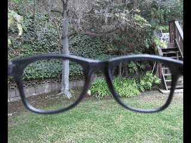

After having one of his seven daily cigarettes on his best friend's Spanish style patio, Adam* '14, for the first time ever, licked approximately 75 micrograms of lysergic acid diethylamide (LSD) off of a bland tasting square of blotting paper. Within 30 minutes Adam and his friends left to explore their familiar urban neighborhood. Knowing LSD posed no threat of addiction, he relaxed and noticed the trees beginning to glow and the sun shining brighter than ever. Textures included cold smooth sidewalks and prickly grass; cotton-candy-like clouds began moving and morphing together in "slanky, lanky, curly shapes." Unlike many other drugs, hallucinogens are not physically or psychologically addictive. Dr. David Kipper, a member of the California Society of Addiction Medicine and the American Society of Addiction Medicine, attributes this to the fact that they don't necessarily stimulate a high, which is why the brain does not crave them.
Most substances Adam has used such as nicotine, adderral and alcohol are possibly addictive. When this concern is relevant, Adam tries to put a limit to his substance use if he notices a particular craving for it. With physical addiction concerns removed, students such as Adam may have worries that differ from addictive drugs. This can cause them to restrict their hallucinogen use differently from use of other substances.
"My biggest fear with most drugs is them taking over me," Adam said.
Adam recognizes that "there is a danger to every drug," but he feels that the benefits of hallucinogens outweigh the dangers.
"LSD made me feel better than I ever had," Adam said.
According to the National Survey on Drug Use and Health, Adam is just one of 779,000 Americans over the age of 12 who have used LSD within the past year.
"Hallucinogens are usually associated with people that are high risk takers," Kipper said.
Hallucinogens are defined by their effect to distort the brain's reality, Kipper explained. The false perception of reality, according to Kipper, can cause the user to engage in dangerous behavior. He said the major long-term risk occurs when images from hallucinogen use remain and cause uncomfortable dreams and flashbacks.
"The length of time these drugs stay in the body depends, but these memories can be seared into the brain forever, much like cattle branding," Kipper said.
Hallucinogen users younger than 25 are at an increased risk for negative consequences for two reasons, Kipper explained. First, these individuals have not completely developed their prefrontal cortex, which Kipper describes as "a person's judgment center." Hallucinogen use at an adolescent stage can lead to an undeveloped ability to distinguish right from wrong. Second, the earlier an individual begins taking a drug the more likely they are to continue using it.
Adam's recreational drug use started the summer after seventh grade when he began smoking pot. Since then he has used Xanax, marijuana, alcohol, LSD, Ambien and codeine. He said he enjoys hallucinogens the most.
"The drugs we are most attracted to choose us," Adam said. "Hallucinogens have chosen me."
Salvia divinorum (salvia) was the first hallucinogen Adam consumed. In the comfort of his cousin's house this past summer, he smoked salvia for the first time. He inhaled deeply twice, keeping each in his lungs for 20 seconds. Since then Adam has used salvia on one other occasion.
"Salvia is one of the least worthwhile, least energizing drugs," Adam said.
Despite his dissatisfaction with the drug, Adam took salvia to prepare for "the harder stuff" he intends to take in college, such as dimethyltryptamine (DMT).
Adam was about 13 when he first became familiar with LSD. At about the same time, a close friend died. After first hearing about LSD he did not intend to take it, but his curiosity about the drug lingered. After two years without his close friend, Adam expected his grief would retreat, but it remained and became even more intense. He decided to take the hallucinogen to try to recall what his friend looked like.
"I just wanted to see her face before my eyes again," Adam said.
Although the only visions of his friend Adam has seen have come from photographs, he believes LSD has restored much of his happiness. At this point, DMT is the only drug that Adam believes may have the potential of reuniting him and his friend.
Unlike Adam's search for pain relief, Casper* '13 began his hallucinogen use for experimentation purposes.
"I was really interested in them and the opportunity arose," Casper said. "It was circumstantial."
For a total of $45 Casper and two friends purchased a three-foot long cactus that contained mescaline. The trio obtained the plant from an online seller and brewed it into a foul tasting tea. Casper said the trip lasted about seven hours although it did not feel this long.
"It felt as if I was stuck in a singular static moment that was constantly getting smaller, as if time was infinitely shedding off in either direction," he said.
Casper describes his one time mescaline experience as "intense," but he plans on using other hallucinogens in the future.
"Hallucinogens aren't addictive so I feel inclined towards them," he said.
There is no age restriction Casper is placing on his hallucinogen use. Nor does he see himself stopping usage if he were to have a "bad trip."
"If I see the drugs getting ahead of my ambitions and aspirations in life I'd probably stop," he said.
Casper believes getting to a point in which hallucinogens ruin his life is unlikely, despite his family's "daunting and scary" history of drug addiction. This hereditary characteristic provides "an element of fear" that forces Casper to be cautious of his drug use.
Hallucinogens are currently "a casual timid interest" for Casper, but he imagines them becoming increasingly important in his future.
Charlie* '13 also anticipates the importance of hallucinogens in years to come.
"Psychedelics are intellectual tools," he said.
Mescaline, LSD and mushrooms (psilocybin mushrooms) are the three hallucinogens Charlie has consumed. Authors such as Aldous Huxley, Terence McKenna, Timothy Leary, Hunter S. Thompson and Alexander Shulgin sparked his interest in the drugs. With each trip, Charlie tried to repress any expectations.
"I feel like if you're expecting pretty visuals or some spiritual mystical experience you probably won't get that," he said.
The visual element of hallucinogens had lesser value to Charlie than the intellectual experience, which is why he prefers the term "psychedelics" to "hallucinogens."
"There is nothing magic in shrooms, or a cactus or a chemical. Everything's in you already; psychedelics are just a chance to pull back the curtain on that part of your mind," he said.
Prior to his hallucinogen use, Charlie had trouble expressing himself to his friends and family. He claims it is a prevalent issue he is trying to improve. He believes that hallucinogens, particularly mescaline, have given him self-awareness, which helps to correct his flaw.
"It's not to say the mescaline told me anything; it allowed me to internalize," Charlie said.
With mushrooms, Charlie had the most "clear-headed" experience. It gave him a "modular" view of the world.
"You're a non-player character in everybody else's RPG game," Charlie said.
Charlie does not place age restrictions on his hallucinogen use. Although he never intends to "trip just to trip."
According to Charlie, it is impossible to have a truly bad trip because he believes all psychedelic experiences are learning opportunities. His positive experiences and lack of craving have caused Charlie to want to continue his hallucinogen use. He views alcohol as a more dangerous substance than any hallucinogen. Charlie is not fearful of his future with them partly because he researches each drug before consuming it. He also feels that his newfound self-awareness allows him to know his limits.
"I can't think of a scenario where I would want to stop using them completely," Charlie said.
Chaplain Father J. Young suspects that hallucinogen use is fairly low among students. "I do not see hallucinogen use as often as I see marijuana or alcohol," Young said.
He is "happy to report this" due to his awareness of the connection between hallucinogen use and schizophrenia. Young said that if an individual is predisposed to schizophrenia and he or she uses hallucinogens they increase their risk of developing the mental disorder.
While Young is unaware of a spike in hallucinogen use, some students have identified an increase in use. "They aren't really party drugs, so I don't see them often, but I have heard more and more kids talking about them," said Lauren Lee '14.